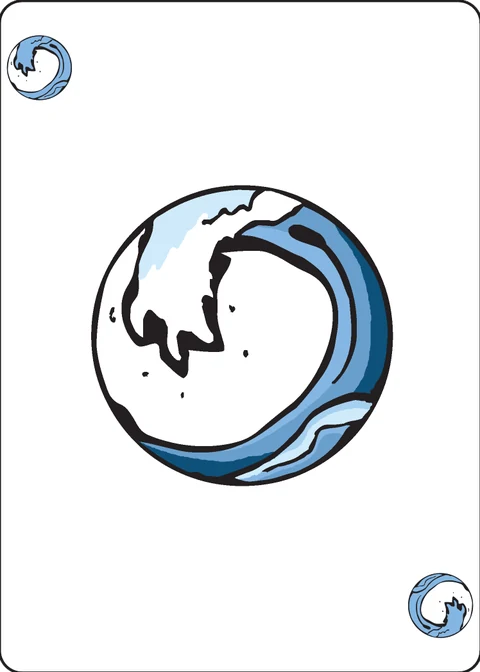

Solo Hex
a solitaire game for the decktet
Setup
Shuffle the Decktet thoroughly. Deal five cards face down into a pile, and another five cards to the right of that. Deal three cards face down below and slightly to the left of the first pile. Deal one card sideways face down, and then three more cards face down in the same pile (For a total of seven cards, the fourth one sideways.) Deal two other piles the same way, one to the right of the first one, so that is below and in between the top piles, and one one below and to the right of the top rightmost pile. Deal two more piles the same way as you dealt the first two (With five cards each.) under the three middle piles. Finally, turn the top card on each pile face up. The entire setup should come out in a hexagon shape.
The setup photo from the wiki shows the seven piles: two of five cards on top, three of seven in the middle (the sideways card peeking out), two of five below.

Game play
The goal of the game is to combine all of the cards into one single pile, face up. Each turn, you may take one card, and move it onto an adjacent card that shares at least one of it's suits (Also move any face up cards under it with the move.). This will leave one card face down, turn it face up immediately. If you reveal a sideways card, that card must immediately 'jump' to an adjacent card that shares at least one of it's suits. If none of of the surrounding cards share a suit, then you 'flip out' and the game is over. If any of your seven piles runs out of cards, you cannot move cards back into it. That pile is empty for the rest of the game. Be careful that you don't leave any piles stranded. If at any time, it becomes impossible to move any cards onto a adjacent card that shares at least one suit, the game is lost.
The excuse: The excuse is a special card. Once revealed, the excuse cannot move onto any card at all. The excuse must be jumped onto from any other card. If the excuse is a sideways card, then it immediately jumps to the lowest numbered card next to it (If there are no numbered cards, just move it onto any card adjacent.)
Victory: If you combine all cards into a single pile, with all of them flipped face up, you win!
Variants
None yet. Ideas welcome!
Note on this implementation
Forty-one cards. The dealing prose puts 5+5 cards on the top row, 7+7+7 in the middle and 5+5 below: 41 cards. The extended Decktet has 45, so this app sets the remaining four aside untouched, as the wiki's setup photo suggests (nothing else is dealt from them). The wiki's Chinese translation instead deals 6/7/6 to use the whole deck; this app follows the English rules text and the designer's original write-up: 41 cards dealt, four set aside.
Which piles are adjacent. The seven piles form a hexagon, so each outer pile touches the centre and the two beside it in the ring — which includes the two top piles and the two bottom piles, sitting side by side in their own row. The wiki sets the top row as "another five cards to the right of that", the same phrasing it uses for the middle row, where the sideways adjacency is not in doubt; and in the wiki's own setup photo the two top piles are the closest pair on the table — about 52px apart against a card some 87px wide, where the three middle piles sit roughly 93px apart to leave room for their sideways cards. The centre touches all six piles; the two left piles (like the two right ones) are a row apart and never touch each other.
Moving stacks. The wiki's move is "take one card, and move it onto an adjacent card that shares at least one of it's suits (Also move any face up cards under it with the move.)" The parenthetical is what matters after the first cover: once a card lands on a face-up card both are face up, and moving the top one carries the whole face-up stack under it. This app therefore moves a pile's entire face-up stack at once (the wiki's Chinese translation renders it the same way, and a published playthrough describes the game as "Window with a hex layout"). A pile's face-down cards never move: when the stack leaves, the pile's new top card is flipped face up. Only the stack's top card's suits are matched against the neighbour's top card.
The sideways card is the fourth card from the bottom of each middle pile, per the dealing order (three down, one sideways, three more); the photo draws it nearer the top; the prose's order is what this app implements. It is revealed — and must jump — only when the three cards above it have been played away. At that moment it is its pile's only face-up card, so it jumps alone; the pile beneath it then flips its next card face up as usual.
Flip out is read as an immediate loss, as written: when a revealed sideways card has no adjacent non-empty pile whose top card shares one of its suits (an empty pile shares nothing), the game is over. When several piles could take the jump, the player chooses which one; a sideways Excuse jumps to the neighbour whose top card is lowest in the reference sheet's rank order — Ace, 2…9, Pawn, Court, Crown — with the player choosing between ties, and with no such neighbour it goes to any adjacent card. A forced jump costs no move.
The Excuse is a sink: anything may be moved — or jumped — onto its pile with the suit rule ignored ("the excuse must be jumped onto from any other card"), and the Excuse itself never moves, so an Excuse-topped pile never moves either.
Victory needs the single pile to be all face up, as written. A lone pile that still hides face-down cards is a loss, not a near win: its stack has nowhere to go (empty piles may not receive cards), so those cards could never be exposed. The wiki defines no score, so this app records whether you won and the size of your biggest pile.
Credits
Designed by tsilver33.
These rules are copied from the Solo Hex page of the Decktet wiki (page revision 4, 21 November 2015) so they can be read offline, under the wiki's CC BY-NC-SA 3.0 licence. Cards by P.D. Magnus, same licence.